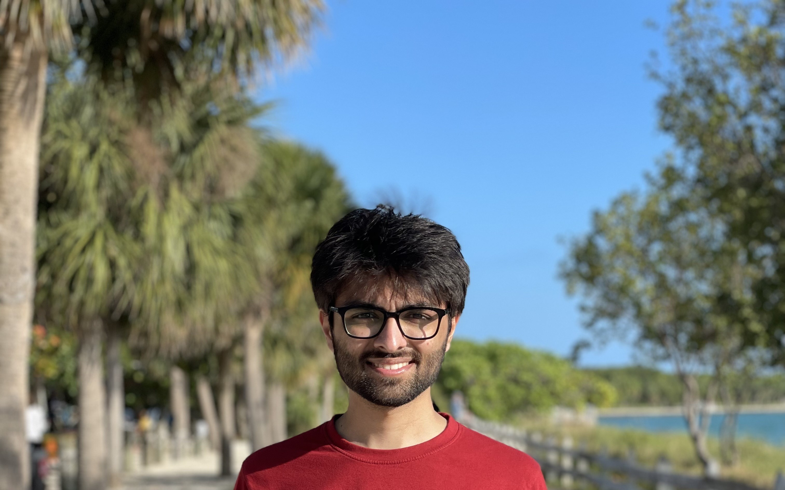

My research interests lie in perception and planning for autonomy, especially for field and service robots. When I'm not indulged in robotics and space, I'm usually obsessing over Formula 1 and travelling.

I'm a graduate student pursuing Masters in Robotics at A. James Clark School of Engineering,
University of Maryland - College Park. Prior to this, I completed my Bachelors of Technology
in Computer Science. I developed the Voronoi based Hybrid A* algorithm for my undergraduate thesis,
under the guidance of Prof. Arpita Sinha at Indian Institute of Technology, Bombay.